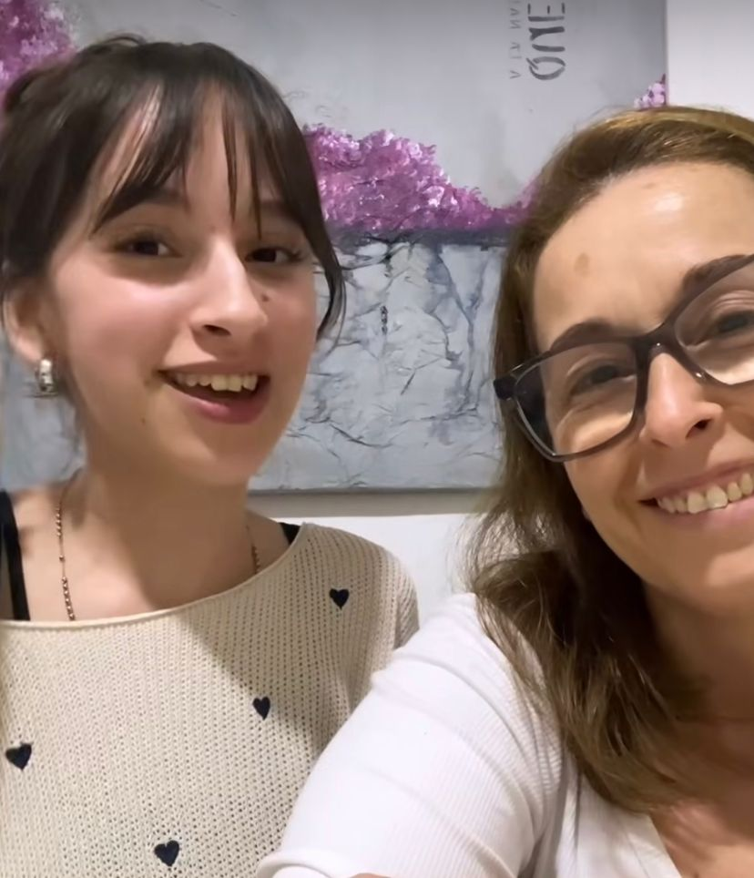

Emotivo
Solidaridad digital: La historia de Luana, la adolescente que encontró apoyo virtual en su lucha contra el cáncer.
El video que Luana grabó junto a sus amigas pidiendo fondos para poder pagar la operación de su enfermedad le cambió la vida. Este tuvo un alcance masivo en cantidad de vistas, me gusta y comentarios.
Cambio de vida cotidiana
Luana Santori tiene 17 años y vive en la ciudad de Buenos Aires como lo hacían muchas adolescentes: colegio, amigas, sueños, y otras actividades de la vida cotidiana. Todo esto cambió abruptamente cuando recibió su diagnóstico en enero del 2025: Cáncer de tiroides. Lo que siguió fue un camino duro, cargado de incertidumbre, dolor y esperanza. A raíz de esto, la jóven y sus amigas decidieron hacer un video para luego compartirlo en las redes sociales con el fin de no solo concientizar, sino también recaudar dinero para su tratamiento.
Cuando llegó la noticia
Hace unos meses, Luana empezó a sentir que algo no estaba bien: Una punción en el cuello despertó su atención. Luego de numerosos estudios médicos, la noticia llegó. El día que recibió el diagnóstico se paralizó: “me miraba al espejo y lo único que veía era una persona enferma: muy flaca, pálida, con ojeras”. En ese instante, relata que aquel momento fue uno de los más duros: Escuchar el diagnóstico junto a sus padres y sentir que todo se paraliza. El silencio, la tensión, las lágrimas y la inevitable pregunta: ¿Por qué a mí?
De lo privado a lo público
Aparte de lo previamente mencionado, su vida social también cambió drásticamente. A pesar de que sus amigas estuvieron a su lado desde el momento cero, tuvo que hacer público su estado, pedir ayuda, hablar de lo que muchos eligen evitar. Esto lo hizo a través de Instagram y TikTok con un video junto a sus amigas donde contó su historia y su necesidad de un tratamiento costoso en otro país porque su obra social no lo cubre.
Una ola de apoyo inesperada
El video tuvo repercusión en todo el país, con más de 137 mil “me gusta” y más de 9 mil comentarios de apoyo, figuras públicas, y desconocidos solidarios. Luana y su familia reconocen que no esperaban este nivel de alcance, pero lo valoran mucho. Sus amigas y su familia, especialmente su mamá, son su apoyo diario. La escuchan, acompañan en cada estudio, la cuidan y por sobre todo logran lo más difícil: sacarle una sonrisa todos los días a pesar de la situación.
Foto de Luana junto a su madre, tomada de su Instagram: @santori_luana
Sueños que siguen en pie
Finalmente, a pesar del diagnóstico, tratamientos y el impacto emocional, Luana no quiere renunciar a sus sueños. Siempre le gustó hacer videos, compartir contenido e inspirar. Aunque reconoce el miedo a que la juzguen, aún sueña con ser influencer y transformar su experiencia en algo que pueda ayudar a otros.